Plant Tracer Web App Tutorial¶
Welcome and Registration¶
If this is your first time using Plant Tracer, you will need to register for an account, unless your course administrator has registered an account for you in advance. To register:
Go to prod.planttracer.com/register.
Register for an account using your Name, Email Address, and Course Key.
If you are using Plant Tracer with a specific course or project, you can enter your course Key provided by your course administrator (your instructor should be able to help you here).
Alternately, you can register for the Web course whose course key is 1b05-4024
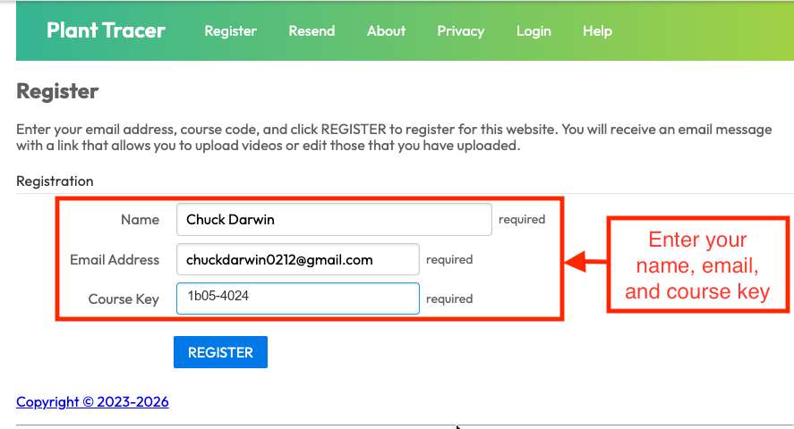
Once you are registered, look for an email from admin@planttracer.com. Click the Log in to Plant Tracer button to log in. From there you can upload movies or view a list of existing movies to work with.
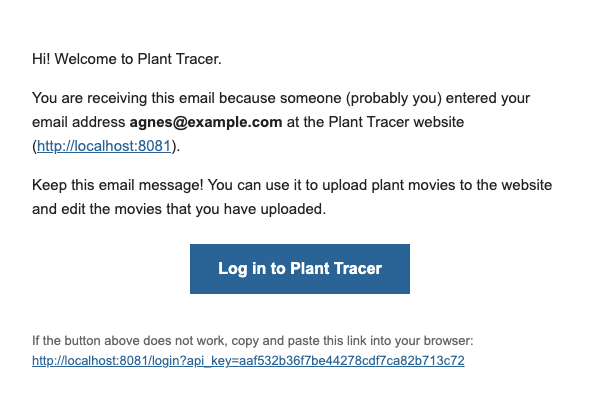
Viewing movies¶
Click on “Movies” in the menu bar at the top of the page to see a list of movies to analyze.
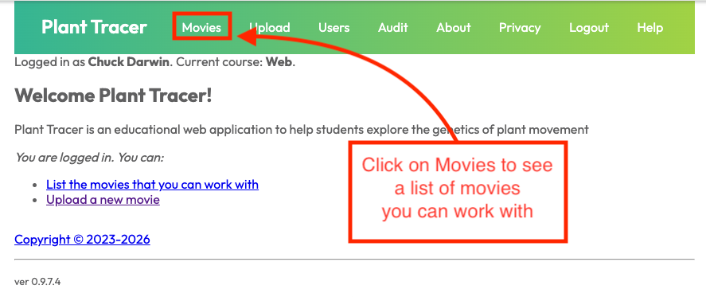
Click on the analyze button to see the tracked movie.
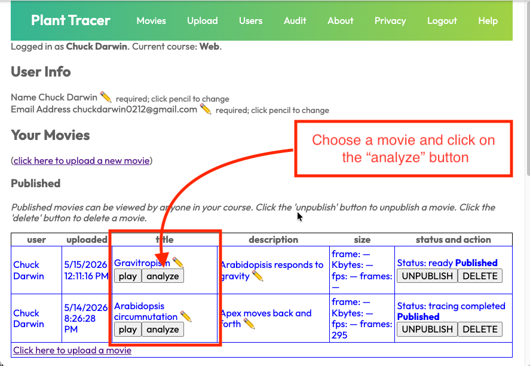
Uploading Movies (optional)¶
Ensure that your video is of a size that works well with Plant Tracer. You may have to resize it before uploading, either by trimming its length or reducing its resolution. The movement tracking algorithm works better with fairly low resolution, so no need to be concerned about losing fine detail. We recommend a frame size of no more than 640 pixels in either dimension. We recommend a maximum of 1,000 frames per movie, though we permit a maximum of 10,000 frames. Your movie file must be 256MB or less or you will not be able to upload it. Plant Tracer keeps the uploaded original movie, but analysis frames are scaled to the tracker size. See Resizing Video Files for some ways to resize videos.
Plant Tracer will accept videos in most well-known video file formats, but MP4 is probably best.
To upload your movie, select Upload from the menu bar at the top of the browser frame.
Enter the title of the file and a description of the movie.
The upload form asks whether your movie may be used in academic research. Before answering, review the Contributor Agreement linked on the form. Select Yes or No. If you select Yes, you will also be asked whether you want to be credited by name; your display name is pre-filled as the attribution name, which you can edit.
If you know the capture interval of your recording (how many frames were captured per minute of real time), enter it in the Capture interval (frames/minute) field. You can also set or change this later on the Analyze page.
Choose a file to upload.
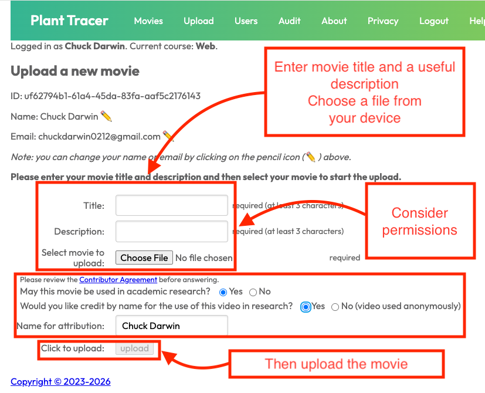
Tracking the Uploaded Movie¶
Once the file is uploaded, the page shows a first frame of your movie and a “Next steps” section. Click Analyze to go to the Analyze page. (The Track the uploaded movie link goes to the same place.)
There’s an opportunity to rotate the movie 90° clockwise as many times as necessary to orient the movie properly if it’s not. Note that once you proceed to the Analyze page, you won’t be able to rotate the movie anymore.
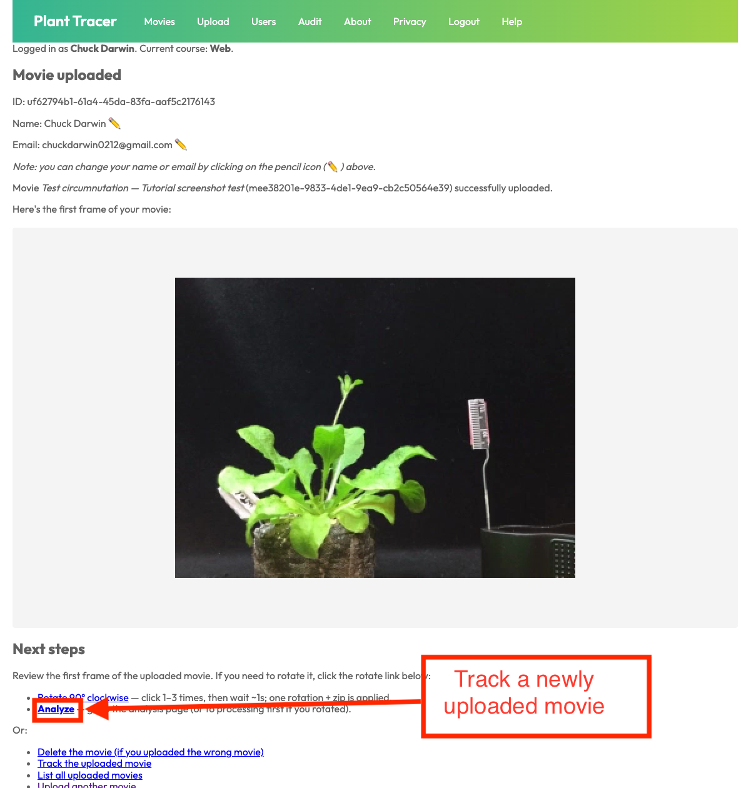
On the Analyze page, position the markers (described below), then click Trace movie to begin tracking.
You can optionally trim the movie to a specific frame range before tracing. Use the Trim start and Trim end controls to set the first and last frame Plant Tracer will analyze. Trimming lets you exclude frames before the plant starts moving or after tracking becomes unreliable without re-uploading the movie.
Plant Tracer places three markers on newly uploaded movies automatically. They initially appear on the left side of the movie frame. These also appear in the Marker Table to the right (or beneath) the video frame.
Plant Tracer will attempt to track the motion of whatever part of the image a marker is placed over, frame by frame.
It is the user’s job to position the markers appropriately. To move a marker, click on it, and drag it to the desired location.
You may use the Marker Table to add and delete markers. There may be any number of markers. Markers cannot be renamed; to use a different name, delete the marker and add a new one with the desired name.
To measure the gravitropism bending angle, click Add Inflection Point (below the Marker Table) to add a special pivot marker at the base or bend point of the stem. Position it like any other marker. Only one Inflection Point may be added per movie.
Plant Tracer will attempt to track the motion related to every marker.
Typically, the apex of some part of the plant is tracked. So, to do that, move the Apex marker, for example, to the top of the vertical stem.
Markers whose names have the form
RulerXXmmare special.XXis any non-negative integer representing a real-world distance in millimeters. These markers are used for distance calibration. Place one marker at a known position and a second marker at a point that is exactlyXXmillimeters away — for example,Ruler 0mmat one end of a ruler andRuler 30mmat a point 30mm further along it. The XX values specify the distance between the marker positions; they do not need to correspond to specific tick marks on any ruler in the video. The default markers are namedRuler 0mmandRuler 10mm; if you want to calibrate over a different distance, delete the default marker and add a new one with the correct name (e.g.Ruler 30mm) using the Marker Table. In this way, Plant Tracer can report analysis results in millimeters rather than pixels.There can be any number of RulerXXmm markers, but Plant Tracer will only use the RulerXXmm markers with the lowest and highest XX values in its calculations, and ignores any intermediate RulerXXmm markers for purposes of distance calculations. Plant Tracer only uses mm distances.
If there are fewer than two RulerXXmm markers on a given analysis, then analysis results are calclulated and presented using units of pixels.
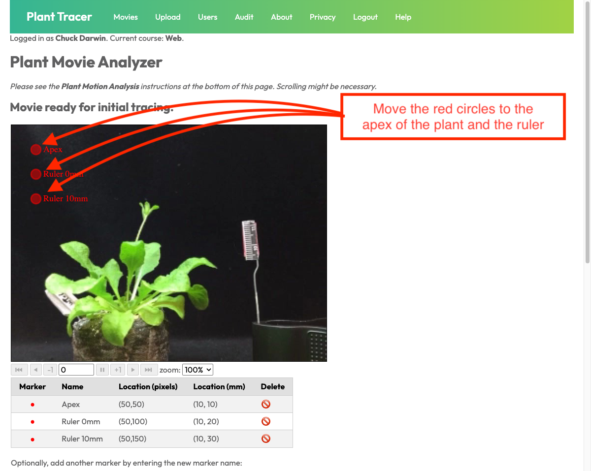
The Apex and ruler markers need to be moved to the appropriate location.
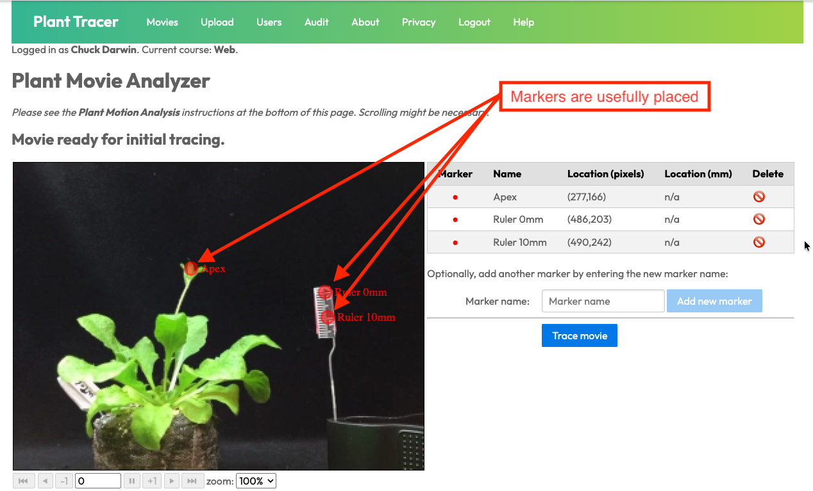
Viewing the trace of a Movie¶
Once the tracked movie has loaded you will see the image of the first frame, the marker table and graphs of the tracked movement.
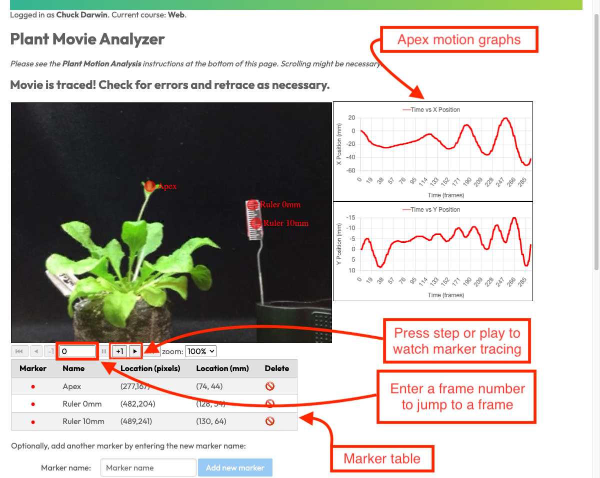
Click the play button to view the movement of the markers across all frames. Use the arrow buttons beneath the movie to step forward or backward one frame at a time, or jump to a specific frame number.
As you navigate frames, the Marker Table updates to show each marker’s current position, and the position graphs highlight the current frame.
Each marker is shown in a distinct color in the graphs, making it easy to compare the motion of multiple markers at once.
Interpreting and Reading Results¶
Use the arrow buttons just below the tracked movie to play, or navigate to a particular frame.
The Position Graphs visualize the change in the non-RulerXX markers’horizontal (x position) and vertical (y position) since frame 0.
Above the graphs, Plant Tracer shows aggregate result statistics. Use the Results selector to choose All, Gravitropism, or Circumnutation:
Gravitropism reports the Distance the tracked tip moved from the first to the last frame, a Rate, and (when an Inflection Point marker is present) the bending Angle at that pivot.
Circumnutation reports the Max Amplitude, the horizontal range of the tracked tip across all frames, and a Rate.
Results are shown in millimeters when two or more ruler markers are present, otherwise in pixels.
Rate is reported per minute when you have entered the capture interval (frames/minute); otherwise it is reported per frame. Enter the capture interval in the Capture interval (frames/minute) field and click Set — the graphs’ time axis and the Rate update immediately, with no need to retrace. You can also set it on the Upload page.
To compute the gravitropism Angle, click Add Inflection Point to place the reference pivot marker (the base or bend point of the stem), then position it like any other marker. The marker name
Inflection Pointis reserved (matched case-insensitively) and only one may be added per movie.
When tracking is complete, you can press Download CSV to get the tracking data in CSV format, or Download Excel to get an XLSX workbook with trackpoints, metadata, marker summary, chart data, and native Excel chart sheets. Each position column header notes its unit.
Ruler XXmmmarker columns are always in pixels. Other markers’ columns are in millimeters when you have calibrated with two or moreRuler XXmmmarkers placed on the ruler in your video (moved off their default positions); otherwise they are in pixels.Press Download Traced Movie to download an MP4 of the analyzed movie with the marker positions overlaid on each frame. This is useful for sharing or presenting the traced result.
At this point, you are ready to use a spreadsheet to further analyze and graph the data.
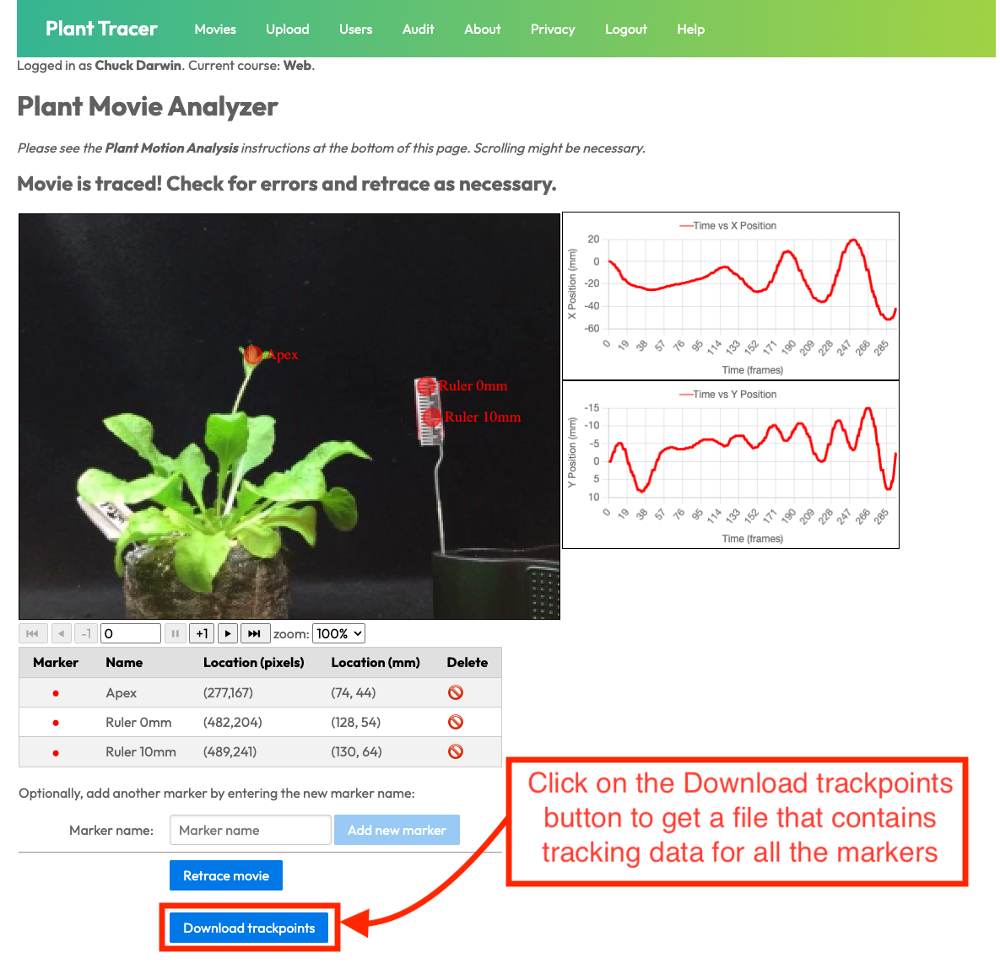
Further Adjustments to Tracking¶
You can enlarge the image of the movie to better view the markers and tracing.
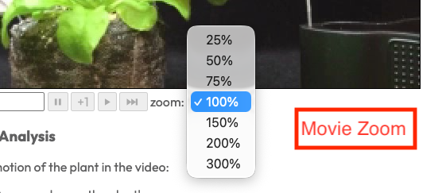
You have the option of re-tracking the movie from that frame.
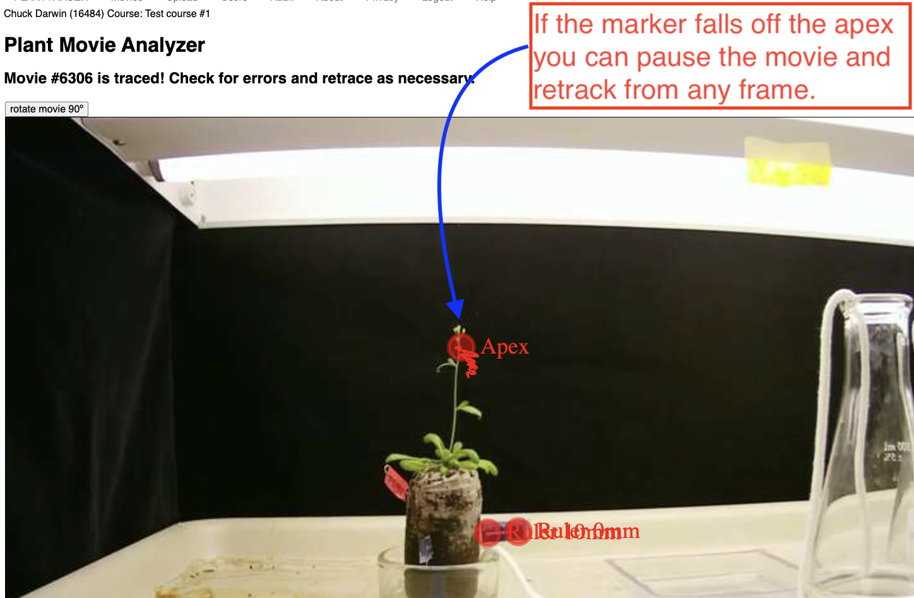
Use the arrow buttons just below the original movie to navigate to the frame where tracking was lost.
Then move the apex marker to the correct position. Now press the button “re-track movie”.
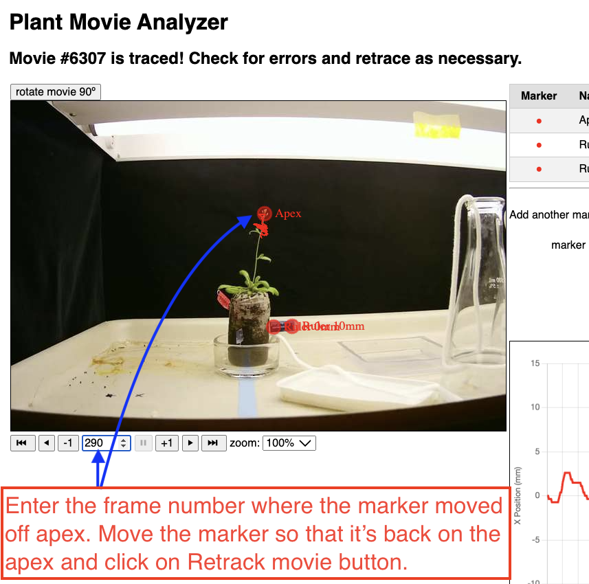
Converting Frames to Time¶
If you enter the capture interval (frames/minute) — on the Upload page or in the field on the Analyze page — Plant Tracer converts frames to elapsed time for you: the position graphs are labeled in minutes and the Rate statistics are reported per minute. The capture interval is the number of time-lapse frames captured per minute of real time (for example, one frame every two minutes is 0.5 frames/minute). It is independent of the movie’s encoded playback frame rate.
If you do not enter a capture interval, the webapp tracks time only as frame numbers and reports Rate per frame; it is then up to the user to convert frames to elapsed timestamps as described below. When recording the movie, the frame period was set: you must know what that was. In Lapse-It, this is one of the parameters set for the recording. Typically, the frame period is one frame every two minutes (120 seconds) or 0.5 frames per minute.
While the program automatically does these conversions for you when a capture interval is present, here are the calculations if you need to do them yourself.
To convert frame numbers to time, multiply the frame number by the frame period:
t[n] = n * FP
For example if the period FP = 2 minutes, then:
t[0] = 0 * 2 minutes = 0 minutes
t[1] = 1 * 2 minutes = 2 minutes
t[2] = 2 * 2 minutes = 4 minutes
etc.
If you have a frame rate (frames per unit of time) rather than a frame period, the frame rate is just the inverse of the period. If the frame period is 2 seconds, the frame rate is 1 frame/2 seconds or 0.5 frames/second.
Let FR be the frame rate. The time t[n] at frame[n] is therefore (n * (1/FR)).
For example, if FR = 0.5, then:
t[0] = 0 * 1/0.5 = 0 seconds
t[1] = 1 * 1/0.5 = 2 seconds
t[2] = 2 * 1/0.5 = 4 seconds
etc.